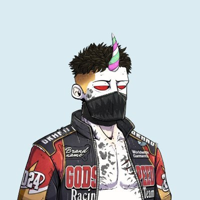
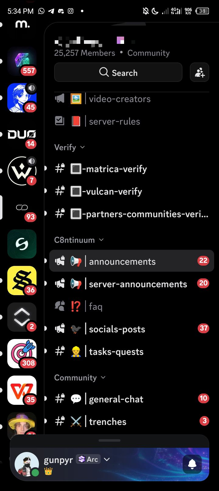

Chat moderation
Keep Discord and Telegram clean, answered, and moving — tickets, noise, and day-to-day chat ops.

// @web4bro
Doom scrolling charts and terminals, retardmaxxing — and keeping chats, collabs, and channels running so the community actually moves.
// about_
I’m Hoomann. I handle chat moderation, social, and collab ops for Web3 communities — Discord and Telegram setup included. Style stays human and online; no corporate fluff.
Open for paid work and collabs with teams that need someone living in the chats and keeping partner work moving.
// services_
Keep Discord and Telegram clean, answered, and moving — tickets, noise, and day-to-day chat ops.
Stay present on CT, push community updates, and keep the timeline useful without sounding like a bot.
Partner outreach, collab coordination, and the follow-through so deals don’t die in DMs.
Discord and Telegram structure: roles, channels, bots, and a layout people can actually use.
// selected work_
Set up a multi-level community Discord (~25k members) with Matrica and Vulcan NFT verification channels, partner verify, announcements, quests, and chat structure.

See setup screenshot →Posted call times and reschedule notices for the @union_build community so members showed up on the right day.
Call reminder →Wrote step-by-step Gleam instructions for the Wandering Whale Sharks giveaway, including Discord/X linking for community onboarding.
Guide post →Public community energy around Union growth — thanking members and staying in every Union post as a consistent CT presence.
Community post →Active in the @boundlesshq Discord with multiple roles — deep in the server, not drive-by CT only.
Roles post →Helped the @bigray0x / Elite DAO community through the WhatsApp → Telegram move and stayed with the group.
Move post →39 positive Ethos reviews calling out consistency, replies, and helping people navigate Web3 — public vouch track record.
Ethos profile →// let’s work_
Need chat mod, collab ops, social, or Discord/Telegram setup? Reach out.